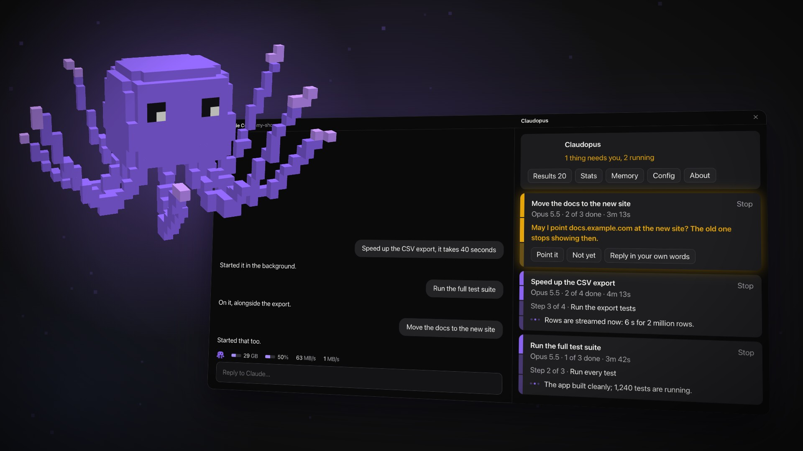

Claude Code, with eight arms.
Ask Claude Code for three things, and they wait in line. Claudopus turns each message into a task that runs in the background, shows every task in a panel beside the chat, and keeps what each one found.
/plugin marketplace add dimka3553/claudopus/plugin install claudopus@claudopusTwo lines at the Claude Code prompt. Free, MIT, macOS and Linux.

The problem
You have three things to ask for. Two of them wait.
A chat takes your requests in turn. While Claude works on the first, the next two wait. So you wait too, or you open more chats and lose track of them.
Claude Code alone one after another
The striped part is waiting. Done after all three, one by one.
With Claudopus side by side
Each one starts when you ask. Done when the longest one is.
A drawing of the idea, not a measurement. Tasks that run side by side use tokens side by side: five at once use them about five times as fast as one.
What changes
Six ways Claude Code alone gets in your way, and what Claudopus does about each.
You wait
One chat works on one request at a time. You can type your next idea, but it waits until Claude finishes the last one.
You keep talking
Each request becomes its own task in the background. The chat is free for your next message right away.
You lose track
To do more at once you open more chats, then forget which one is doing what.
One place for everything
A panel beside the chat shows every task as a card, with its to-dos and a line on how far it has got.
Questions are scattered
Each chat asks in its own window. With several open, nothing gathers what is waiting for you.
They come to you
Questions from every chat go to the top of the panel with answer buttons, a short sound and a notification.
It forgets
A long chat fills up, and Claude starts to lose what you told it at the start. So you say it again.
It remembers
The tasks do the work, so your chat stays small. Your messages are saved word for word, and Claude can look them up.
Results get buried
The result you asked for ends up far up the chat, under everything that came after.
Results are kept
What a finished task found is saved in a list, with its pictures. Open it any time, from any chat on that machine.
No second check
Nobody else looks over Claude's work before it says “done”.
Checked first
Claudopus's rules have a second Claude, one that did not do the work, look for what is wrong before you see it.
You keep the ideas. Claudopus keeps track of the rest.
The panel
One panel beside the chat shows every task.
See how far each task has got.
Every task is a card with its to-dos, the step it is on, and a line saying what Claude is doing now.
What needs you is on top.
A question turns its card amber and brings it to the top, with buttons to answer. It stays until you answer.
Change a task while it runs.
Send a message about a running task, and the chat passes it to that task. Stop on a card ends it.
Know when a task is done.
The card turns green, a chime plays and a notification names the task, so you can be somewhere else.
Waiting on you 1
Recent
Results
Nothing you asked for gets buried.
Every finding, in one list.
What a finished task found is saved with its pictures, the newest at the top. It is a plain file on your machine, so it is still there after the chat is gone.
Your decisions wait at the top.
When a task ends with something only you can decide, its result is listed first, under “Waiting on you”. Open it and press Yes or No: your answer goes to the chat, which acts on it.
Pick up where a task stopped.
Open a result and press Continue from this. Claudopus names that result in the chat's box, and you finish the sentence.

Watch the tourInstall it with two lines, open it with a third.
Type them at the Claude Code prompt, in a terminal.
It needs a recent Claude Code, and it adds its author's working principles to every chat.
/plugin marketplace add dimka3553/claudopus/plugin install claudopus@claudopus/claudopusopens the panelAnswer y to add the marketplace, then press Enter to pick the first choice, the user scope. Then /claudopus opens the panel. Nothing has to be typed in each chat.
In the Claude desktop app
Click + next to the prompt box, then Plugins. Add a marketplace with dimka3553/claudopus, then add the plugin named claudopus.
From a shell
claude plugin marketplace add dimka3553/claudopusclaude plugin install claudopus@claudopusIf the short form fails over SSH
Use the full address in its place:
https://github.com/dimka3553/claudopus.git
What you see afterwards
- Claudopus is on in every chat you open from then on, in every folder.
- You send a message. The chat answers in one line, starts a task in the background, and is free for your next message.
- The panel opens beside the chat by itself the first time a task starts in that chat. If you close it, it closes in every chat. Type
/claudopusto open it again. - While tasks run, a bar above the prompt shows memory, processor, graphics, battery, disk and network, with Claude's own share in purple.
- When a task finishes, the chat passes on its result, and the panel lists it under Finished.
Good to know before you install.
It adds its author's principles
Claudopus adds its author's working principles to every chat, and they shape how Claude answers. They are short rules, such as giving short replies and bringing solutions before questions. Read the principles before you install.
It can ask for your Mac's password
When a task needs an admin command, its card shows the exact command, and Claudopus runs it only after you press Allow. Claudopus never saves the password. Each admin command asks for it, in macOS's own box on a Mac, or otherwise in a box at the top of the panel. It is never put in a chat, a file or a log.
It needs
- Claude Code in the terminal or the desktop app; it is tested with 2.1.325, and older versions may not draw everything.
- Access to the model the chat picks for each task: Opus for most, Sonnet for long searching and reading, Fable only for heavy tasks.
- The panel's Stats tab reads Claude's records with
jq, which macOS 15 and later include.
Where it works, and where it does not
- It runs on macOS and on Linux.
- It has been seen working in the macOS desktop app, and in a terminal on Linux.
- On Linux, passwords and keys are saved in files only you can read, notifications need a desktop, and small copies of pictures need ImageMagick.
- VS Code has not been tried yet.
- It does not work on Windows under WSL, because plugins do not load there.
- It does not work where your organization's admins block mods.
- In
claude -pprint mode and in cloud sessions there is no panel.
You can turn it off
Type /plugin disable claudopus@claudopus at the prompt. The same line with enable turns it back on, and with uninstall it is removed.
Your memory folder is left in place.
Where the code is.
github.com/dimka3553/claudopus
The README there has the settings and the rest of the detail. The code is under the MIT licence.